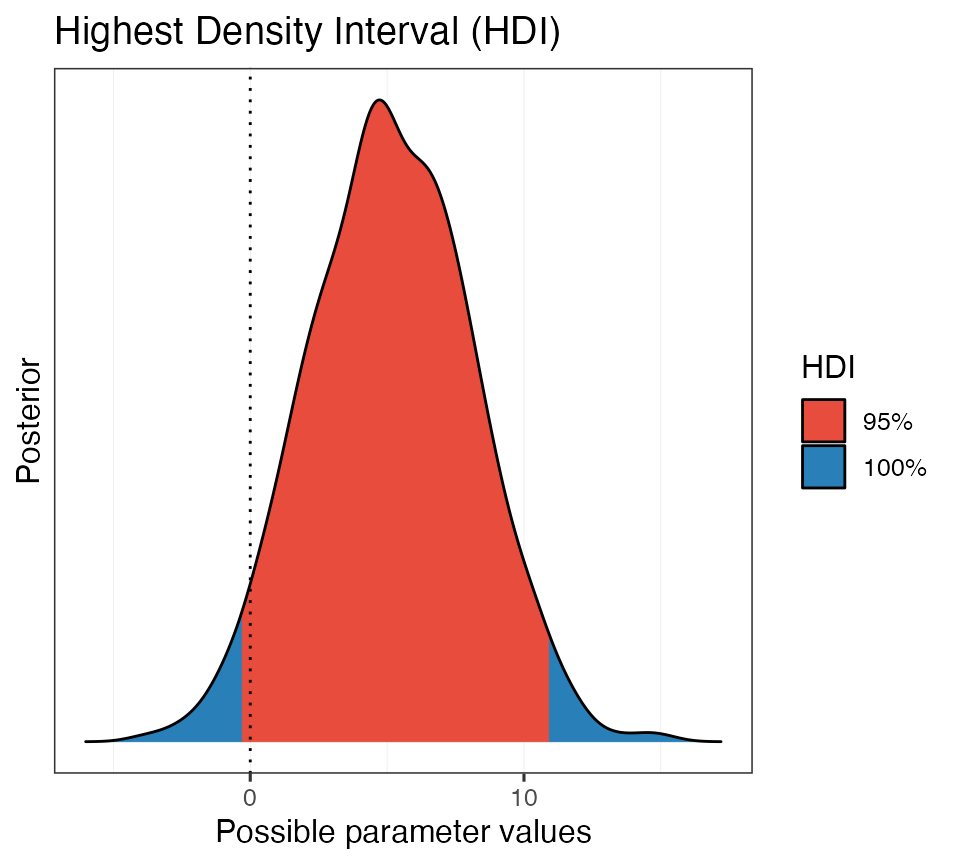

Get set up
First, let’s load the packages and data we will be using.
# Packages
library("learnB4SS")
library("dplyr")
library("ggplot2")
library("brms")
library("bayestestR")
# Data
data(polite)
mod_00 <- system.file("extdata/b_mod_00.rds", package = "learnB4SS")
mod_01 <- system.file("extdata/b_mod_01.rds", package = "learnB4SS")Credible intervals
The first tool we will consider for making statistical inferences in a Bayesian framework is the credible interval. If you have heard of Bayesian inference before, there is a good chance you have also heard of credible intervals. We could describe them as the Bayesian counterpart to confidence intervals under a frequentist framework.
All we need to calculate a credible interval is a probability distribution. In R, this can be as simple as a vector of values. We’ll illustrate by sampling fake data and calculating a CI using base R.
# Generate 'fake' posterior by sampling values from a normal distribution with
# mean of 5 and SD of 3
posterior <- rnorm(n = 1000, mean = 5, sd = 3)
# Use quantile function on posterior
quantile(posterior, c(0.025, 0.975))
#> 2.5% 97.5%
#> -0.5628624 10.7875254We can see that the 95% CI for our posterior is -0.5628624, 10.7875254.
We can simplify the process even more using the hdi
function from the bayestestR package. This has some other
benefits that we will see in a bit.
# bayesTestR::hdi
hdi_ex1 <- hdi(posterior)
hdi_ex1
#> 95% HDI: [-0.33, 10.91]Notice that the ranges are slightly different. This is because the HDI, highest density interval, is a special type of credible interval. There are several methods for calculating a CI, but we won’t go into that now. For our purposes we will stick with the HDI.
One advantage to using the hdi function from the
bayestestR package is that it also has print methods. This
means we can wrap the plot() function around our
hdi object, like this:
# Generate a plot from the hdi object
plot(hdi_ex1)
Beautiful!
Now let’s repeat this using a real posterior from a model object.
Recall that we fit this intercept-only model previously:
# Intercept-only model
b_mod_00 <- brm(articulation_rate ~ 1, data = polite)Let’s get the posterior distribution and calculate the HDI of the intercept.
# Get posterior samples
post_00 <- posterior_samples(b_mod_00)
# Calculate HDI
hdi_ex2 <- hdi(post_00$b_Intercept)
hdi_ex2
#> 95% HDI: [6.52, 6.83]So we are 95% certain that the value of the intercept falls between about 6.5 and 6.8. Cool. Let’s plot this as well.
# Plot it
plot(hdi_ex2)Now we repeat this process with yesterdays model that included the
predictor attitude.
Here is the model again, just in case:
# Specify priors
priors_simple <- c(
prior(normal(0, 15), class = Intercept),
prior(normal(0, 10), class = b, coef = attitudepol),
prior(cauchy(0, 1), class = sigma)
)
# Fit model
b_mod_01 <- brm(
formula = articulation_rate ~ attitude,
data = polite,
prior = priors_simple
)
# Get posterior samples
post_01 <- posterior_samples(b_mod_01)Let’s calculate the CI for the parameter
b_attitudepol.
# Calculate HDI
hdi_ex3 <- hdi(post_01$b_attitudepol)
hdi_ex3
#> 95% HDI: [-0.71, -0.13]It looks like the 95% CI does not encompass 0. Let’s take a look at a plot.
# Plot it
plot(hdi_ex3)This is helpful. We can see that the 95% HDI does not encompass 0,
but there is some posterior mass that is positive (in blue).
In other words, positive values are still a possibility, given the data,
the model, and our prior assumptions.
Bonus:
We can also use the hdi function directly on a model
object.
# Get HDI of all paramters of model
hdi(b_mod_01)
#> Highest Density Interval
#>
#> Parameter | 95% HDI
#> ----------------------------
#> (Intercept) | [ 6.68, 7.09]
#> attitudepol | [-0.71, -0.13]And, like before, we can use the built-in print methods to quickly generate a plot:
Probability of direction
Another tool we have for decision making is the
probability of direction, also known as the maximum
probability of effect. The probability of direction tells us the
proportion of the posterior that has the same sign (that is, if its + or
-) as the median of the distribution. This value can range from 50% to
100% (0.5 - 1.0).
To calculate the probability of direction we will again resort to the
bayestestR package and use the p_direction
function. The function will calculate the probability of direction on a
vector,
# "Fake" posterior example
p_direction(posterior)
#> Probability of Direction: 0.96on posterior samples taken from a model object,
# PD of intercept-only model
p_direction(post_00$b_Intercept)
#> Probability of Direction: 1.00and directly on a model object:
# PD for all parameters in b_mod_01
p_direction(b_mod_01)
#> Probability of Direction
#>
#> Parameter | pd
#> --------------------
#> (Intercept) | 100%
#> attitudepol | 99.70%Again, we can take advantage of the print methods and quickly generate a plot:
# Assign PD to object and print
pd_on_mod <- p_direction(b_mod_01)
plot(pd_on_mod, show_intercept = T)To build intuition about how the probability of direction corresponds
with a frequentist p-value we can use the pd_to_p and
p_to_pd functions to convert between the two (not
recommended).
# Calculate p-value from PD
pd_to_p(0.987)
#> [1] 0.026
# Calculate PD from p-value
p_to_pd(0.01)
#> [1] 0.995This plot shows the linear relationship between the probability of direction and a frequentist p-value.
ROPEs
The next tool we are going to talk about combines the highest density credible interval with a region of practical equivalence, or a ROPE We can use the ROPE to calculate the proportion of the HDI of a posterior distribution that lies within its bounds. ROPEs are useful because they allow the researcher to define a range of values which they consider to be practically equivalent to a null effect
We will again use the rope function from the
basyestestR package. By default, the rope
function will calculate the proportion of the 95% CI that falls within
our ROPE range. Like before, we can operate on a single distribution
stored in a vector
# Calculate % of HDI within rope using simulated data
rope(posterior)
#> # Proportion of samples inside the ROPE [-0.10, 0.10]:
#>
#> inside ROPE
#> -----------
#> 0.42 %We can set the range of the ROPE and the size of the HDI using the
arguments range and ci, respectively.
# Calculate % of HDI within rope w/ specific settings
rope(posterior, range = c(-0.1, 0.1), ci = 0.99)
#> # Proportion of samples inside the ROPE [-0.10, 0.10]:
#>
#> inside ROPE
#> -----------
#> 0.40 %The default sets the CI to 95% and the ROPE range to ±0.1, unless the
input is a Bayesian model. In that case, the function
rope_range is used to calculate a ROPE (following Kruschke
2018, see ?rope_range).
\[\color{black}{\frac{\mu_{1} - \mu_{2}}{\sqrt{\frac{\sigma^2_{1} + \sigma^2_{2}}{2}}}}\]
# Calculate an appropriate ROPE following Kruschke 2018
rope_range(b_mod_01)
#> [1] -0.1164812 0.1164812
# Run it on our model
rope_on_mod01 <- rope(b_mod_01, range = c(-0.2, 0.2), ci = 0.95)
rope_on_mod01
#> # Proportion of samples inside the ROPE [-0.20, 0.20]:
#>
#> Parameter | inside ROPE
#> -------------------------
#> Intercept | 0.00 %
#> attitudepol | 5.79 %And again there are also print methods for rope objects.
plot(rope_on_mod01, show_intercept = T)
We can also use a ROPE with multiple CIs.
# Set more strict ROPE and several HDIs
rope_on_mod02 <- rope(b_mod_01, range = c(-0.2, 0.2), ci = c(0.9, 0.95, 0.99))
rope_on_mod02
#> # Proportions of samples inside the ROPE [-0.20, 0.20]:
#>
#> ROPE for the 90% HDI:
#>
#> Parameter | inside ROPE
#> -------------------------
#> Intercept | 0.00 %
#> attitudepol | 3.33 %
#>
#>
#> ROPE for the 95% HDI:
#>
#> Parameter | inside ROPE
#> -------------------------
#> Intercept | 0.00 %
#> attitudepol | 5.79 %
#>
#>
#> ROPE for the 99% HDI:
#>
#> Parameter | inside ROPE
#> -------------------------
#> Intercept | 0.00 %
#> attitudepol | 7.58 %
plot(rope_on_mod02)Your turn!
Now let’s take some of these tools and use them to test different
hypotheses using the polite dataset.
Let’s fit the following model:
articulation_rate ~ musicstudent
To simplify, you can use the same priors from above. Here is a hint, but you need to fill in the details.
# Specify priors
priors_simple <- c(
prior(normal(0, 15), class = Intercept),
prior(normal(0, 10), class = b),
prior(cauchy(0, 1), class = sigma)
)
b_mod_02 <- brm(
formula = ???,
prior = ???,
data = polite
)- Using a credible interval, determine whether or not there is compelling evidence that the articulation rate between non-music students and music students is non-zero.
- What is the probability that the estimate of the difference between
non-music students and music students, i.e.,
musicstudentyes, is negative?
- Again, consider the non-music/music student difference, but quantify your uncertainty using a ROPE (use a range and CI width of your choice). Plot the result.
Hint:
You can calculate all of these metrics with a single function! Try
describe_posterior.
describe_posterior(b_mod_02, rope_range = c(-0.15, 0.15), ci = 0.99)